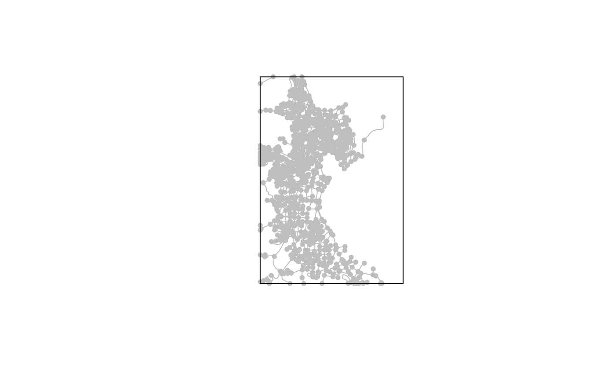

Clip sfnetwork by Polygon
osm.ClipSFnetwork_with_poly(innet, inpol)sfnetwork to clip
sf polygon to use for clipping
An sfnetwork
Other osm:
osm.CreateEmptyRaster(),
osm.bb_2_pol(),
osm.combineAmenities(),
osm.combineShops(),
osm.getFrequency(),
osm.getLength_footway(),
osm.getPOI_usingbb(),
osm.getPOI(),
osm.getRoads(),
osm.osmdata_result_2_bbox_pol()
library(goal)
library(sf)
#> Linking to GEOS 3.8.0, GDAL 3.0.4, PROJ 7.0.0; sf_use_s2() is TRUE
library(sfnetworks)
library(tidygraph)
#>
#> Attaching package: ‘tidygraph’
#> The following object is masked from ‘package:stats’:
#>
#> filter
q=c(26.545029,39.088569,26.570177,39.116810)
net2 = osm.getRoads(q, withBB=TRUE, outcrs=4326)
#>
#> Using bbox
#> Warning: st_crs<- : replacing crs does not reproject data; use st_transform for that
#> Warning: st_crs<- : replacing crs does not reproject data; use st_transform for that
poly = osm.bb_2_pol(q, outcrs = 4326)
net3 = osm.ClipSFnetwork_with_poly(net2, poly)
#> Warning: Clipping does not give correct results for undirected networks when applied to the edges
#> Warning: attribute variables are assumed to be spatially constant throughout all geometries
plot(net3, col="grey")
plot(poly, add = TRUE)
